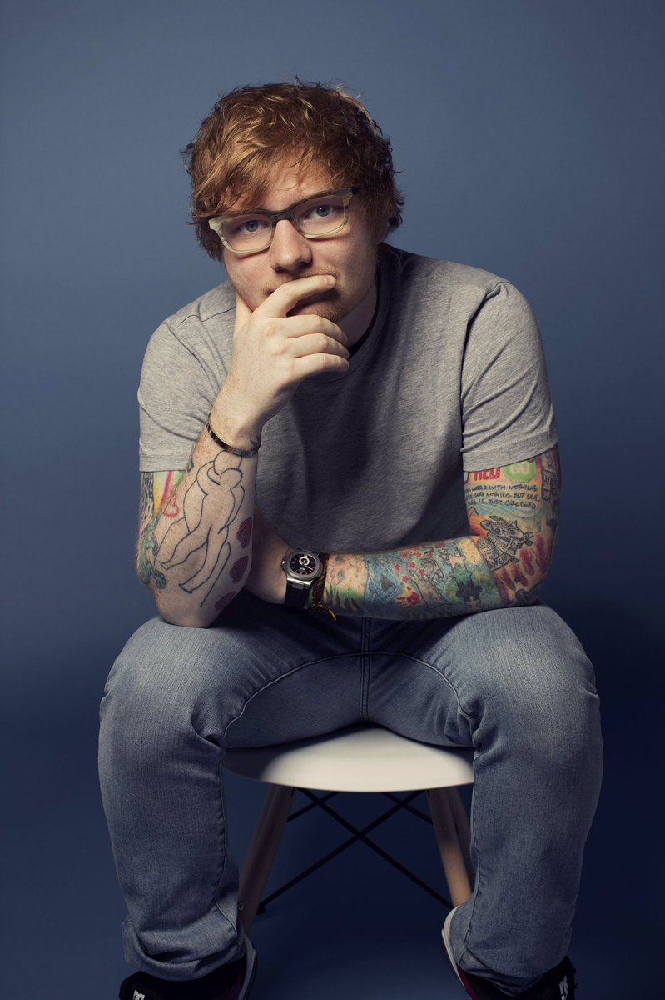
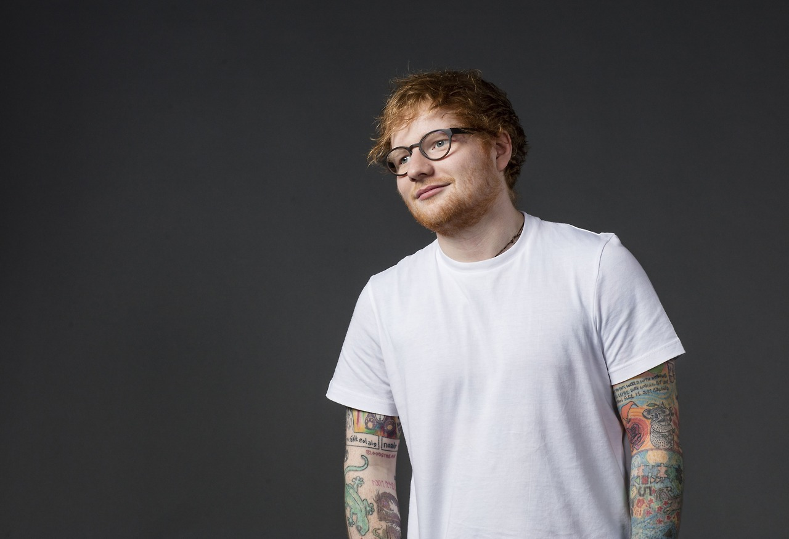
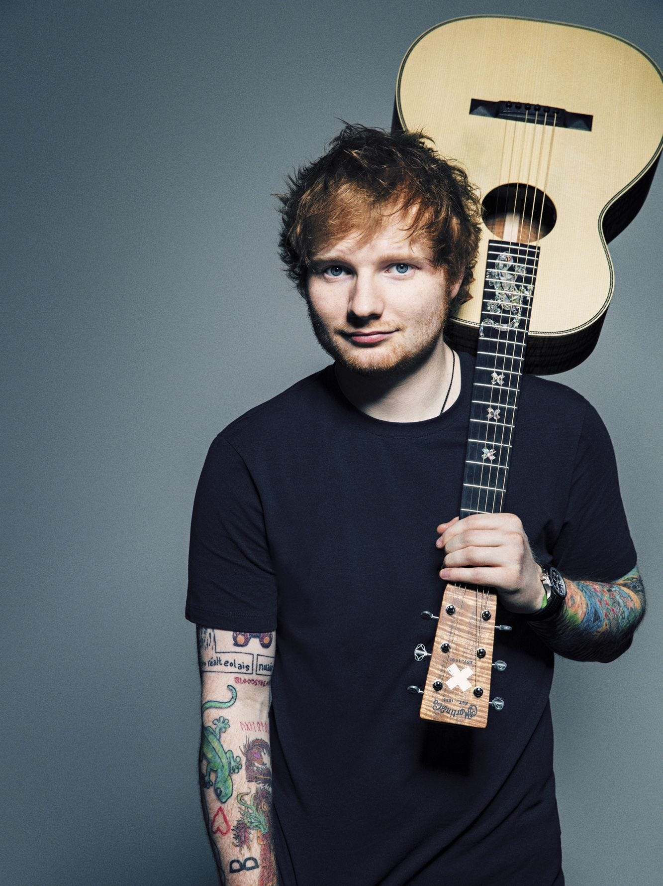
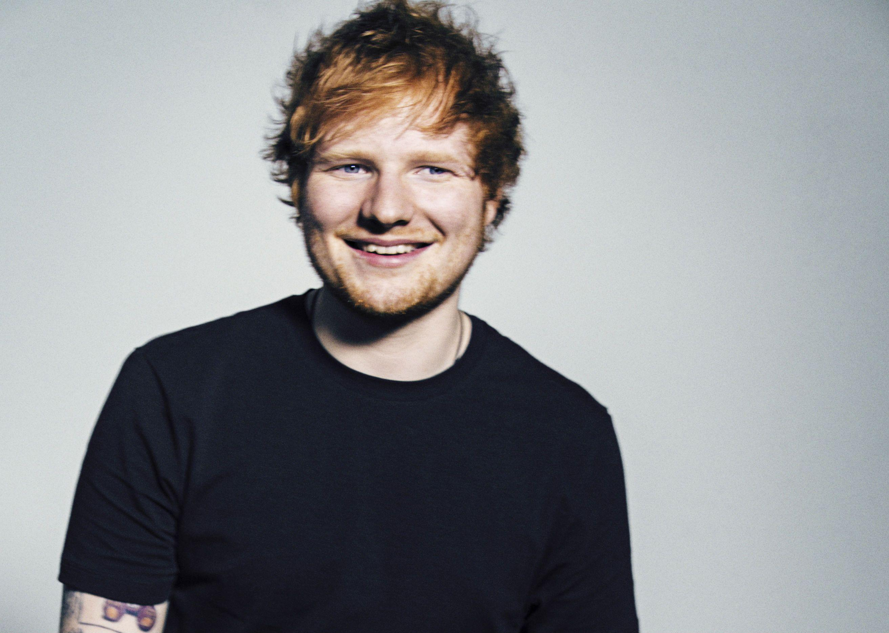

Edward Christopher "Ed" Sheeran is a famous English singer and songwriter, who has won the hearts of people all over the world with his melodic voice. He is an occasional rapper and actor as well. His popularity increased especially after the release of his first album ‘+’ and after a guest appearance was made by him on Taylor Swift's fourth studio album 'Red.’ He began recording music in 2004. His first work 'Spinning Man' was released independently. After moving to London from Suffolk in 2008, he used to play in small venues and also released the EP ‘You Need me’ in 2009. While in London, he also auditioned for a British musical drama television series ‘Britannia High.’ His debut album '+' was released in September 2011. Having sold 791,000 copies in the UK by the end of the year, it stood as the ninth bestselling album there. It was also reviewed positively by critics. The next year he won the 2012 Brits awards for Best British Male Solo Artist and British Breakthrough Act of the Year. His songs slowly started gaining more popularity, and were widely appreciated by the public.
#Fact 1
Ed Sheeran started off by singing in the church choir at the age of 4. He learned to play the guitar at a young age as well and even released an EP at age 14. Sheeran moved to London when he was 16 in 2008 and performed over 300 live shows in 2009.

#Fact 2
Ed Sheeran had a lot of tattoos of many random things. Most of his tattoos are along his arms. Included in his sleeve of tats is a cup of tea, a ketchup bottle, the word ‘Prince’ signifying his love of The Fresh Prince of Bel-Air, Puss in Boots, the phrase ‘Festina Lente’, his family tree, a section of Van Gogh’s ‘Starry Night’ and a tribute to Taylor Swift Red tattoo. The Red tattoo was a thank you to Taylor Swift for getting him started in the business.

#Fact 3
Ed Sheeran has sold more than 26 million albums and 100 million singles worldwide, making him one of the world’s best-selling music artists. He was born in Halifax, West Yorkshire, England and raised in Framlingham, Suffolk. His dad John is an art historian, his mum Imogen designs jewellery and his brother Matthew is a classical composer.

#Fact 4
Taylor Swift contacted Sheeran after hearing his music while touring Australia in March 2012. He later co-wrote and provided vocals for “Everything Has Changed”, a single featured on Swift’s fourth studio album, Red.

#Fact 5
After signing with Asylum Records, his debut album, + (pronounced “plus”), was released in September 2011. It topped the UK and Australian charts, reached number five in the US, and has since been certified seven-times platinum in the UK.

#Fact 6
Most people who pursue a life in music start at very young ages. The same holds true for Ed Sheeran. He started off by singing in the church choir at the age of 4. He learned to play the guitar at a young age as well and even released an EP at age 14. Sheeran moved to London when he was 16 in 2008 and performed over 300 live shows in 2009.